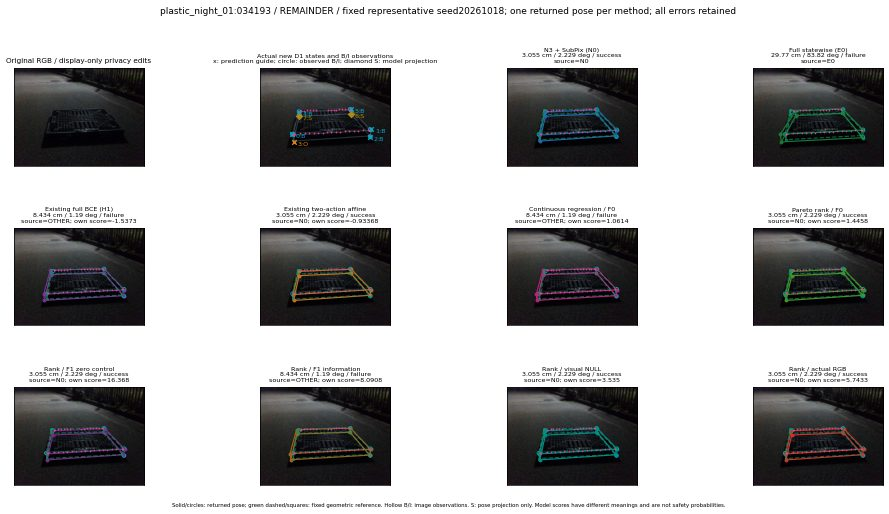

실선은 반환 자세, 초록 점선은 고정 기하 참조입니다. S는 영상 관측이 아닙니다. 점수는 모델별 의미가 다르며 보정된 안전 확률이 아닙니다. 개인정보 처리는 표시 사본에만 적용했습니다.
| 방법·seed | 위치 / 회전 / 공동성공 | 실제 출처 | 선택 후보 | 각 모델 자체 점수 |
|---|---|---|---|---|
| N0 | 3.055 cm / 2.229 deg / success | N0 | N/A | N/A |
| E0 | 29.77 cm / 83.82 deg / failure | E0 | N/A | N/A |
| E0_REGENERATED | 29.77 cm / 83.82 deg / failure | E0 | E0_REGENERATED | N/A |
| POSEFIX_SUBPIX_PF_ANCHOR | 2.867 cm / 1.713 deg / success | OTHER | N/A | N/A |
| POSEFIX_SUBPIX_YOLO_ANCHOR | 2.867 cm / 1.713 deg / success | OTHER | N/A | N/A |
| D1_H1_MLP_s20261018 | 8.434 cm / 1.19 deg / failure | OTHER | G13/ORIGINAL_WD/selected | -1.537341833114624 |
| D1_H1_MLP_s20261019 | 8.434 cm / 1.19 deg / failure | OTHER | G13/ORIGINAL_WD/selected | -1.5727944374084473 |
| D1_H1_MLP_s20261020 | 8.434 cm / 1.19 deg / failure | OTHER | G13/ORIGINAL_WD/selected | -2.2053680419921875 |
| D1_H1_PAIR_MLP_s20261018 | 3.055 cm / 2.229 deg / success | N0 | N0 | -1.9933472871780396 |
| D1_H1_PAIR_MLP_s20261019 | 3.055 cm / 2.229 deg / success | N0 | N0 | -1.964432716369629 |
| D1_H1_PAIR_MLP_s20261020 | 3.055 cm / 2.229 deg / success | N0 | N0 | -2.738384246826172 |
| D1_H1_PAIR_ROLE_AFFINE_s20261018 | 3.055 cm / 2.229 deg / success | N0 | N0 | -0.9336777925491333 |
| D1_H1_PAIR_ROLE_AFFINE_s20261019 | 3.055 cm / 2.229 deg / success | N0 | N0 | -1.2122448682785034 |
| D1_H1_PAIR_ROLE_AFFINE_s20261020 | 3.055 cm / 2.229 deg / success | N0 | N0 | -0.7804832458496094 |
| R_CONT_F0_s20261018 | 8.434 cm / 1.19 deg / failure | OTHER | G13/ORIGINAL_WD/selected | 1.0614237785339355 |
| R_CONT_F0_s20261019 | 8.434 cm / 1.19 deg / failure | OTHER | G13/ORIGINAL_WD/selected | 1.0814368724822998 |
| R_CONT_F0_s20261020 | 8.434 cm / 1.19 deg / failure | OTHER | G13/ORIGINAL_WD/selected | 1.1320692300796509 |
| R_ORDER_F0_s20261018 | 3.055 cm / 2.229 deg / success | N0 | N0 | 1.4457645416259766 |
| R_ORDER_F0_s20261019 | 3.055 cm / 2.229 deg / success | N0 | N0 | -0.1647416055202484 |
| R_ORDER_F0_s20261020 | 3.055 cm / 2.229 deg / success | N0 | N0 | -11.468137741088867 |
| R_ORDER_F1_ZERO_s20261018 | 3.055 cm / 2.229 deg / success | N0 | N0 | 16.368337631225586 |
| R_ORDER_F1_ZERO_s20261019 | 3.055 cm / 2.229 deg / success | N0 | N0 | 5.569024085998535 |
| R_ORDER_F1_ZERO_s20261020 | 3.055 cm / 2.229 deg / success | N0 | N0 | 4.755422592163086 |
| R_ORDER_F1_s20261018 | 8.434 cm / 1.19 deg / failure | OTHER | G13/ORIGINAL_WD/selected | 8.090841293334961 |
| R_ORDER_F1_s20261019 | 8.434 cm / 1.19 deg / failure | OTHER | G13/ORIGINAL_WD/selected | 6.009610652923584 |
| R_ORDER_F1_s20261020 | 8.434 cm / 1.19 deg / failure | OTHER | G13/ORIGINAL_WD/selected | 1.8391714096069336 |
| V_ORDER_NULL_s20261018 | 3.055 cm / 2.229 deg / success | N0 | N0 | 3.5350100994110107 |
| V_ORDER_NULL_s20261019 | 8.434 cm / 1.19 deg / failure | OTHER | G13/ORIGINAL_WD/selected | 1.1329436302185059 |
| V_ORDER_NULL_s20261020 | 8.434 cm / 1.19 deg / failure | OTHER | G13/ORIGINAL_WD/selected | 2.629176378250122 |
| V_ORDER_RGB_s20261018 | 3.055 cm / 2.229 deg / success | N0 | N0 | 5.743256568908691 |
| V_ORDER_RGB_s20261019 | 8.434 cm / 1.19 deg / failure | OTHER | G13/ORIGINAL_WD/selected | 0.2979855537414551 |
| V_ORDER_RGB_s20261020 | 8.434 cm / 1.19 deg / failure | OTHER | G13/ORIGINAL_WD/selected | -5.191397190093994 |